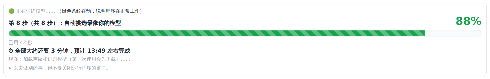
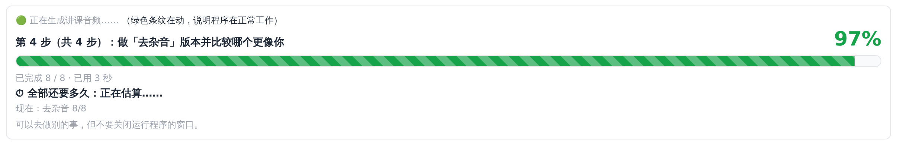
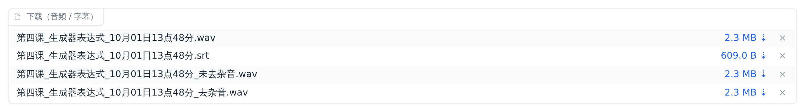
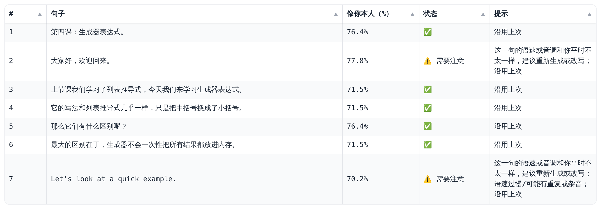
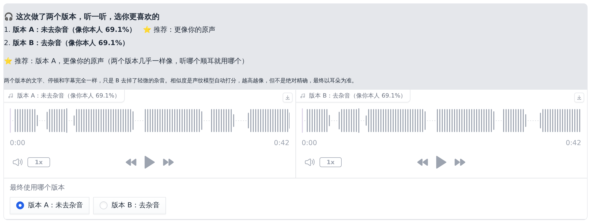

这一步在 ② 训练模型 页面完成。训练是让模型反复"听"你的素材、学会你的声音的过程，全部自动进行，什么参数都不用填：程序会按你的显卡（显存）和素材多少自动定好训练方案；训练结束后，还会自动挑出最像你的模型版本，并把语速调得和你本人一样。

训练方案（图 8-1 那一行，开始训练后标题变成"🧠 这次自动选择的训练方案"）里每一项的意思：
| 方案里写的 | 意思 |
|---|---|
| 显存 12 GB → 每批 6 条 | 每次一起学几条片段。按显存自动算（大约是显存 GB 数的一半，最多 12 条）。显存越大训练越快，但不会因此更像。 |
| 素材 15 分钟（208 条）→ 音色 SoVITS 8 轮、语气 GPT 15 轮 | 把全部素材学几遍。素材少于 30 分钟时音色学 8 遍，30 分钟以上学 12 遍；语气和节奏学 15 遍（GPT-SoVITS 官方的默认值）。练太多反而会变差。 |
| 音色每 2 轮、语气每 3 轮存一次模型，训练完自动挑最像你的那个 | 训练中途会存下好几个版本，训练完由程序"考试"，挑出最像你的那个（8.5 节）。 |
| 不开 DPO（……） | DPO 是 GPT-SoVITS 的一个实验功能，自动时不开，括号里写着原因（见下面的说明）。 |
voicetwin.bat train -v 我的声音 --dpo on（第 14 章）。训练进度条会依次经过 8 步：
| 进度条上写的 | 这一步在做什么 |
|---|---|
| 第 1 步：检查显卡、整理训练素材 | 定好训练方案，整理出参加训练的片段（"考试题"除外，见 6.5 节）。 |
| 第 2 步：处理文字 | 把文字转换成发音信息。 |
| 第 3 步：提取声音特征 | 提取每段录音的声音特征和你的声纹。 |
| 第 4 步：提取语义 | 把声音转换成模型能学习的"语义单位"。 |
| 第 5 步：训练音色（SoVITS） | 学习你的音色。最花时间的两步之一。 |
| 第 6 步：训练语气和节奏（GPT） | 学习你的语气和节奏。 |
| 第 7 步：保存模型 | 整理训练中存下来的各个版本。 |
| 第 8 步：自动挑选最像你的模型 | 让每个版本读"考试题"，和你的真实录音比较，挑出最像你的，并校准语速（8.5 节）。第一次会先下载声纹和识别模型。 |
更细的过程在进度条下面的 详细过程（出问题时可以复制给帮你的人） 里，一般不需要看。其中挑选模型时的 s4-g6 表示"音色第 4 轮 + 语气第 6 轮"的组合。
| 显卡 | 30 分钟素材 | 1 小时素材 | 3 小时素材 |
|---|---|---|---|
| RTX 3060 / 4060 | 约 20~40 分钟 | 约 40~90 分钟 | 约 2~4 小时 |
| RTX 3080 / 4070 | 约 15~25 分钟 | 约 25~50 分钟 | 约 1.5~2.5 小时 |
| RTX 4090 / 5090 | 约 8~15 分钟 | 约 15~30 分钟 | 约 45~90 分钟 |
以上是粗略估计，实际时间受显卡、CPU、硬盘速度和素材情况影响。进度条上会写出这台电脑上的预计完成时间。
训练过程中，程序会每隔几轮存一个模型版本（训练方案里写的"音色每 2 轮、语气每 3 轮存一次"）。训练得太少不够像，训练得太多又可能"学过头"（变得不自然、漏字）。 哪个版本最像你？程序不靠猜，而是用第 6 章留出的"考试题"——你的真实录音、没有参加训练——来考试：让每个版本读同样的句子，和你本人读的比较：
综合分最高的版本成为默认模型（训练完成时显示的"像你本人 xx%"就是它的成绩）；同时根据"时长比"算出语速校准系数，让生成的语速和你本人一致。这一切都是自动的，你不需要做任何设置。
| 情况 | 怎么做 |
|---|---|
| 增加了新的讲课素材 | ① 开始准备素材（只处理新增的文件，之前的校对不会丢）→ ② 开始训练 |
| 在训练之后才校对了文字 | 保存修改后 → ② 开始训练 |
| 删掉了一些不好的片段 | 把"保留"改成"否"、保存修改后 → ② 开始训练 |
| 只想重新挑选最佳模型（例如装好了识别模型后想加上错字率评分） | ② 点 重新挑选最佳模型（几分钟，不需要重新训练） |
一般不需要改。想自己控制时，点开 ② 训练模型 下面的 高级设置（一般不用改，数字保持 0 = 自动）：
| 设置 | 自动时 | 说明 |
|---|---|---|
| 引擎 | GPT-SoVITS（推荐） | 保持不变。Qwen3-TTS 是可选引擎（13.4 节）。 |
| 音色训练轮数（0 = 自动） | 素材 <30 分钟：8 ≥30 分钟：12 | 音色（SoVITS）学几遍，最多 25。太多可能不自然。素材有底噪或背景音乐时，自动最多 8 轮。 |
| 语气训练轮数（0 = 自动） | 15 | 语气和节奏（GPT）学几遍。轮数太多反而容易漏字、复读，不建议加。 |
| Qwen3 训练轮数（0 = 默认） | — | 只在引擎选 Qwen3-TTS 时有用。 |
| 每批数量 batch（0 = 自动；显存不够报错时改成 2） | 约显存 GB 数的一半，最多 12（6 GB 显卡最多 2） | 每次一起训练几条。显存不够（报 out of memory）时，程序会先自动减半重试一次；还不行就填 2，再不行填 1。 |
| DPO（GPT-SoVITS 的实验功能） | 自动（推荐）= 不开 | 三个选项：自动（推荐）/ 开 / 关。为什么默认不开，见 8.3 节。 |
填了数字的项以你填的为准，其余仍然自动；训练方案那一行会写出最终用的数字。命令行对应的参数是 --sovits-epochs、--gpt-epochs、--batch-size、--dpo（第 14 章）。
这一步在 ③ 生成讲课音频 页面完成，也是你以后每次都会用的功能：粘贴讲稿，点"生成"，得到用你的声音读出来的讲课音频和字幕。质量和语速程序都已经按你的电脑和你本人设好，一般直接点"生成"就行。
讲稿就是你要"说"的内容。可以直接在网页里粘贴文字，也可以上传文件（txt、md、docx、srt）。写法很简单：
[停顿=2]（2 秒）。# 第四课：生成器表达式 这样的写法，会被读出来并在后面停顿。更多写法（Markdown、读音纠正、按字幕时间轴生成等）见第 10 章。

| 设置 | 推荐 | 说明 |
|---|---|---|
| 讲稿 | — | 粘贴讲稿文字。 |
| 或上传讲稿文件（txt / docx / md / srt） | — | 上传 txt、md、docx 时，文件内容会直接放进上面的讲稿框，可以接着修改。上传 srt 字幕时按字幕的时间轴生成（10.7 节）；想改用讲稿框里的文字，点文件右上角的 × 删掉它。 |
| 保存的文件名（可以不填） | 留空 | 例如"第3课 牛顿第二定律"。不填时用讲稿的第一句（或上传的文件名），后面自动加上生成时间（9.6 节）。 |
| 保存格式 | WAV | WAV（音质最好，剪映/后期用）或 MP3（文件小，方便发微信、上传）。MP3 是压缩格式，停顿处可能有极小的杂讯；要绝对安静请用 WAV。 |
| 质量 | 自动选好 | 见下面"质量：五个档位"。 |
| 语速 拉杆 | 0 | 见下面"调语速"。 |
| 只重新生成第几句（例如 3,5,8-10；留空 = 全部） | 留空 | 第一次生成留空。对某几句不满意时填编号（9.5 节）。 |
| 高级设置（一般不用改） → 引擎 | GPT-SoVITS | 选"GPT-SoVITS（推荐，用你训练的模型）"。Qwen3-TTS、"IndexTTS（不用训练）"是可选引擎（13.4 节）。如果看到"测试引擎（不是你的声音）"，不要选。 |
| 高级设置（一般不用改） → 指定参考音频编号（留空 = 自动挑选） | 留空 | 留空时程序自动挑选（疑问句用提问语气的参考、陈述句用陈述的参考）。想固定某种语气，可以填一个参考音频的编号（13.2 节）。 |
程序会按你的显卡自动选好默认档位，并在质量下面写一句，例如"已按你的显卡自动选好「完美」（显存 12 GB）。"：显存 8 GB 以上默认完美；显存更小默认极致；没有能用的 NVIDIA 显卡时默认均衡（用 CPU 生成会很慢）。
| 档位 | 做法 | 速度 | 适合 |
|---|---|---|---|
| 快速 | 每句只做 1 遍 | 最快 | 先听个大概，检查讲稿里有没有读错的词 |
| 均衡 | 每句做 3 遍，自动挑最像你的 | 较快 | 日常草稿；没有能用的显卡时的默认 |
| 最好 | 每句做 5 遍，并用识别模型检查漏字、错字，不合格自动重做 | 中等 | 正式课程 |
| 极致 | 每句做 8 遍（显存小于 8 GB 时 6 遍），更严格地检查漏字错字，不够像的自动重做 | 很慢（约为均衡的 3～5 倍） | 显存小于 8 GB 时的默认 |
| 完美 | 每句 4 遍一批地试，直到达到严格标准或试满 20 次；严格检查漏字错字；同时做两个版本（未去杂音 / 去杂音）让你选（9.4 节） | 最慢 | 最终发布；显存 8 GB 以上时的默认 |
第一次用最好、极致、完美档时，如果整合包里没有现成的识别模型，程序会先下载一个用来检查错字的识别模型，要多等几分钟。
命令行对应的写法：--faster 10（快 10%）、--slower 15（慢 15%），或 --speed 1.1（第 14 章）。



程序用几个声纹模型（GPT-SoVITS 整合包自带的 ERes2NetV2 和 Resemblyzer）给生成的声音打分，再用你自己的真实录音校准：先从你的训练素材算出你的"平均声纹"，再看留出来的"考试题"（没参加训练的你的真实录音）和它有多像，把这个水平定为 100%。所以 100% = 和你自己的另一段真实录音一样像。大致标准：95% 以上非常像；85%~95% 比较像；低于 85% 不够像。
85% 规则：每一句都会生成好几个候选，低于 85% 的候选直接淘汰，在剩下的里面挑最像你的。如果某一句连最好的候选也不到 85%，就先保留最好的那个，但在"提示"里写上 "低于 85%，建议重新生成或改写这一句"。

| 列 | 含义 |
|---|---|
| # | 句子编号，从 1 开始（重新生成某一句时用这个编号）。 |
| 句子 | 这一句的文字（长句子会被自动拆成几段，每段一个编号）。 |
| 像你本人（%） | 这一句最终选中的那个版本有多像你。 |
| 状态 | ✅ 很像（95% 以上）、🟢 比较像（85%~95%）、🔴 不够像（低于 85%）、⚠️ 需要注意（有提示）。没有可靠的声纹模型时只显示 ✅ 或 ⚠️。 |
| 提示 | 程序发现的可能问题，例如"低于 85%，建议重新生成或改写这一句""可能有读错的字（识别为：……）""这一句的语速或音调和你平时不太一样""语速过慢/可能有重复或杂音"。"沿用上次"表示这一句没改，直接用了上次的结果。有提示的句子建议试听一下，不满意就重新生成（9.5 节）。 |
每次生成还会在保存文件夹里留一份 .report.json 报告（每句的时间、用的参考音频、试了几次等），一般不需要看。
用"完美"档生成时，结果播放器下面会多出一块 "🎧 这次做了两个版本，听一听，选你更喜欢的"（图 9-7）：
两个版本各自写着"像你本人百分之多少"。程序会自动比较哪个更像你的原声，标上 ⭐ 推荐，并先替你选好它。两个版本的文字、停顿和字幕完全一样，停顿都是完全静音，只是 B 去掉了轻微的杂音。

听完后如果某几句不满意（语气不对、有杂音、读错字），不需要全部重新生成：
3,5。可以写范围，例如 8-10 表示第 8、9、10 句；可以混合，例如 3,5,8-10。除了在网页上下载，所有生成的文件也自动保存在：D:\VoiceTwin\workspace\我的声音\outputs\。生成完后点 📂 打开保存文件夹 就能直接打开这个文件夹；点 📍 在文件夹里找到这个文件 会打开文件夹并选中刚生成的音频。
| 文件 | 说明 |
|---|---|
第四课_生成器表达式_10月01日14点19分.wav | 最终的音频（"完美"档就是你在"最终使用哪个版本"里选的那个）。文件名 = 保存的文件名（没填就用讲稿第一句或上传的文件名）+ 生成时间。保存格式选了 MP3 时是 .mp3。 |
……_14点19分.srt | 字幕文件，时间轴和音频对应。 |
……_14点19分_未去杂音.wav……_14点19分_去杂音.wav | "完美"档的两个版本（版本 A、版本 B），都会保存。 |
……_14点19分.report.json | 生成报告（一般不用看）。 |
这些音频可以直接剪进课程视频里：只有你的声音，停顿是完全静音，音量已经自动调整到和你原来的录音一致（第 11 章）。
第01课.md、第02课.md。